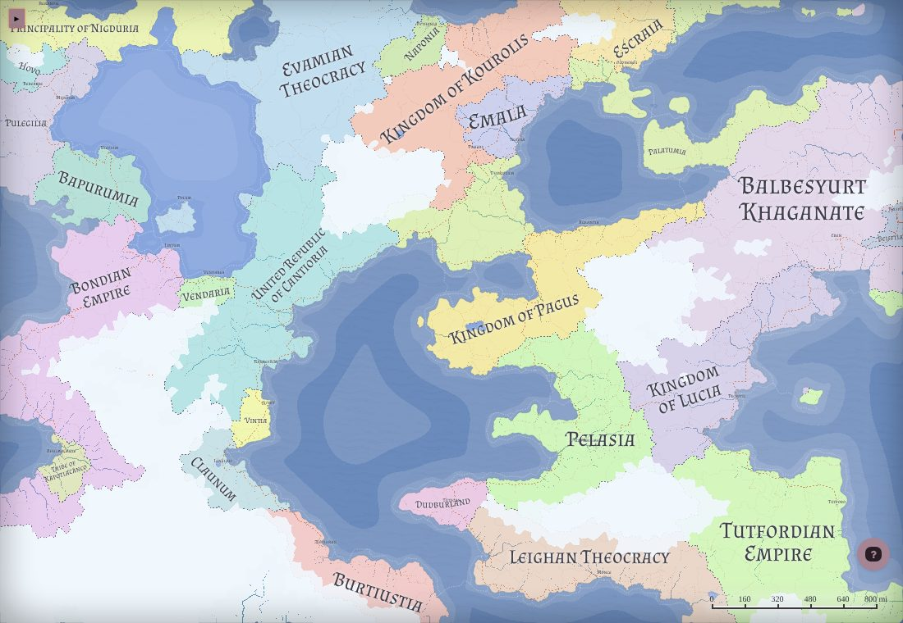
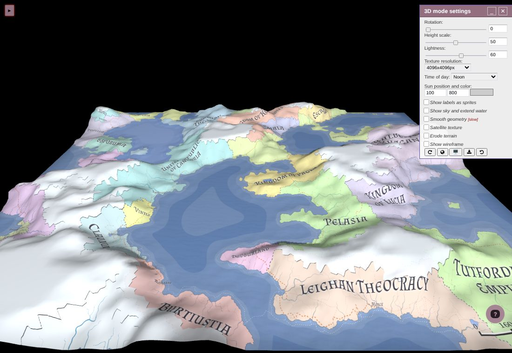
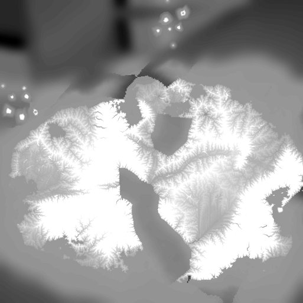
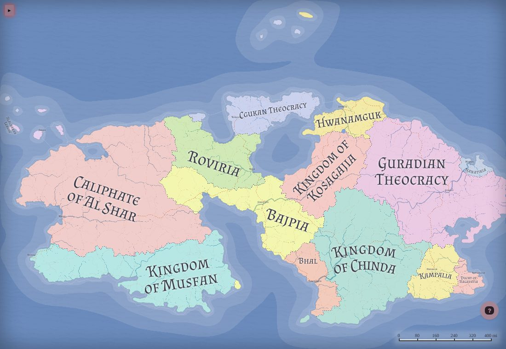
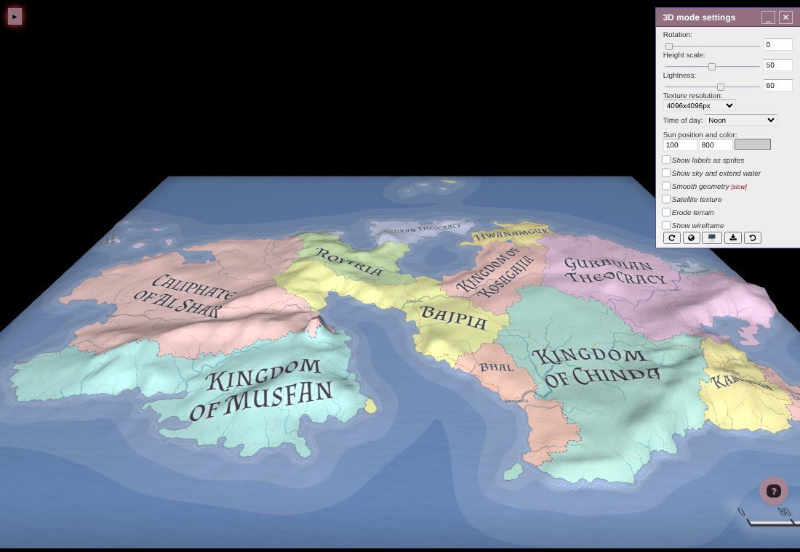
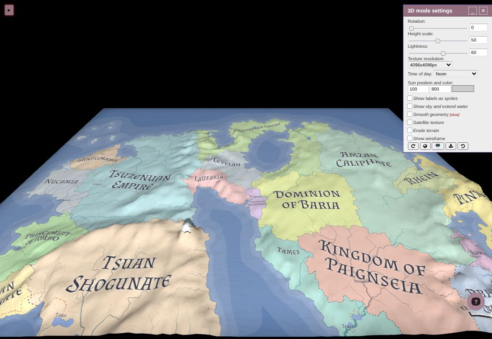
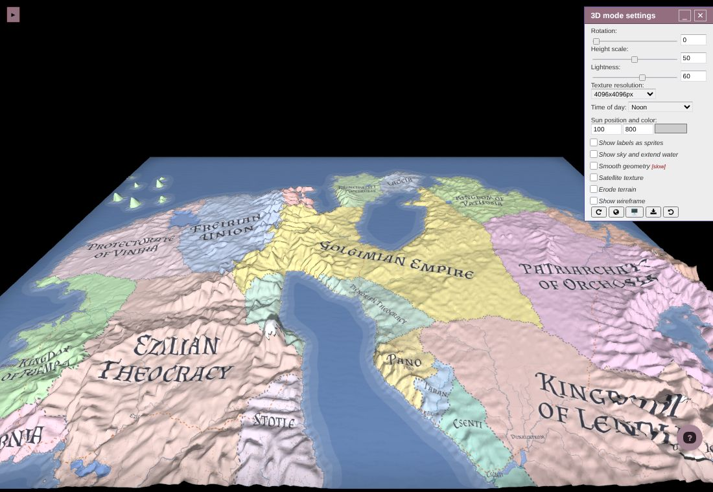
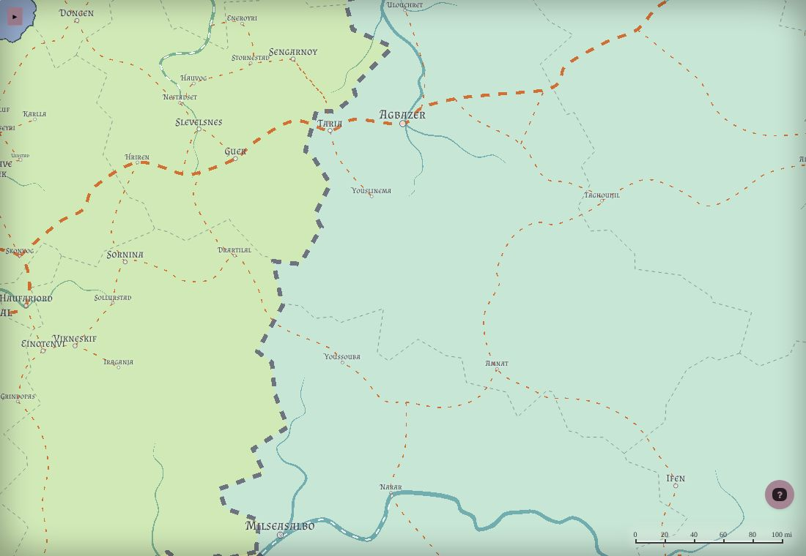
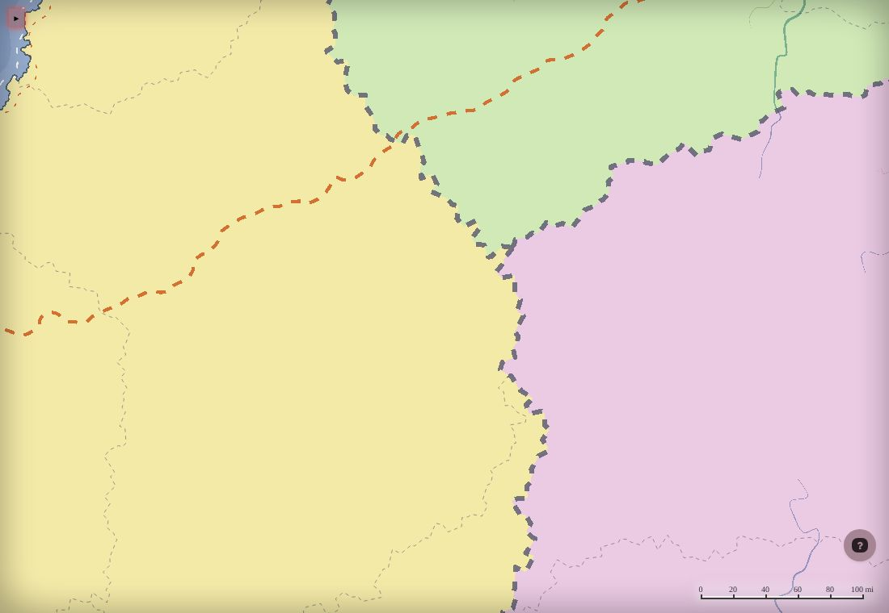

地図の使い回し検証(2026-11-15)
①Worldsmith ②procedural-world-generation ③区画数を増やした場合(後半)
概要: 別の地図ソフト(Worldsmith、procedural-world-generation の2つとも)で作った標高を、Azgaar に渡して、国・川・道つきの平面図と立体図を出せました。Azgaar のコードは1行も変えていません。標高の画像を差し替えただけです。
やったこと
| 1 | Worldsmith から標高画像(513×513、白黒)を取り出す |
|---|---|
| 2 | 海と陸の境(Azgaar は標高20を海面とする)に合わせて、明るさを変換する |
| 3 | Azgaar に「この画像から世界を作れ」と指定して生成する |
| 4 | 平面図と立体図(Azgaar 標準の表示)を撮る |
結果
 ① Worldsmith の標高(白いほど高い)
① Worldsmith の標高(白いほど高い)
② 平面図。国・国境・国名・川・道が、この標高から自動で出た
③ 立体図。平面図が地形に貼られ、国名も地形の高さに沿って置かれた| 生成時間 | 約1.8秒 |
|---|---|
| 区画数 | 約9,200(標高画像の513×513より粗い) |
| できたもの | 国25、街約1,000、川約330、道約780 |
わかったこと
- 標高の受け口は「画像を渡すだけ」で、クラスの改造は要らない。他のソフトの標高を使い回せる。
- 国・川・道・国名・立体は、標高から自動でそろう。標高をどこで作るかと、見せ方は切り離せる。
② procedural-world-generation でも同じことをした
こちらは地形が本格的(侵食・川の谷)です。標高画像(1024×1024、16ビット)を取り出し、海面(標高0m)を境に変換して、同じ手順で Azgaar に渡しました。

① 標高(明るさを強調して表示。尾根と谷が細かく刻まれている)
② 平面図。国・国境・国名・川・道が出た
③ 立体図| 生成時間 | 約1.5秒 |
|---|---|
| 区画数 | 約5,900(標高画像の1024×1024よりずっと粗い) |
| できたもの | 国14、街約880、川約250、道約700 |
2つを比べて
- どちらも通った。標高の画像を差し替えるだけで、平面図・立体図・国・川・道が出る。
- 雪山の広がりは、変換の仕方次第。②は高さを抑えて変換したので、雪山は広がらず自然に見える。①は変換が粗かったので、同じ変換に直せば減るはず。
- 細かさは Azgaar の区画数で決まる。②の標高にあった細かな尾根や谷は、約5,900区画に粗くまとめられ、消えている。「細かい地図」にするには、区画数を増やす必要がある(重さは未測定)。
- ②の標高は、作るのに約33秒かかる。使うなら、先に作って保存した画像を渡す形になる。
③ 区画数を増やして、細かくなるか・重さはどうか
同じ標高画像(procedural-world-generation)で、Azgaar の区画数だけ変えて作りました。クラウド上の2コアの計算機での測定です(iPhone の速さではありません)。
| 区画数 | 作成時間 | メモリ(JS) | 川 | 道 | いちばん重い部分 |
|---|---|---|---|---|---|
| 約1万(標準) | 約2.0秒 | 約55MB | 約200本 | 約950 | 経済(生産) |
| 約2万 | 約3.3秒 | 約100MB | 約400本 | 約1,080 | 経済、川 |
| 約4万 | 約5.2秒 | 約150MB | 約280〜690本 | 約1,300 | 川(約1.6秒) |
| 約8万 | 約11秒 | 約400MB | 約770本 | 約1,480 | 川(約4.2秒) |
| 約10万(上限) | 約13秒 | 約530MB | 約580〜720本 | 約1,560 | 川(約5秒)、くぼ地の湖(約1.9秒) |

立体 約1万区画(同じ標高でも、なだらか)
立体 約10万区画(尾根や谷が細かく出る)
平面を拡大 約1万区画(国境や海岸がカクカクしている)
平面を拡大 約10万区画(国境・海岸・川が細かい)。作るたびに国の形が変わるので、同じ場所の比較ではありませんわかったこと(区画数)
- 細かくなる。区画を増やすと、立体の尾根・谷、平面の国境・海岸・川が細かくなる。
- 重さは区画数に比例して増える。1万→10万で、作成時間は約6倍、メモリは約10倍。
- 重くなる部分が変わる。標準では経済(生産)が重いが、区画が増えると川とくぼ地の湖が重くなる(経済は街の数で決まるので、ほぼ増えない)。つまり「細かさ」のコストは、地形(川・湖・道)の側にかかる。
- 立体の表示は、10万区画でも開けた(ソフトウェア描画)。ただし iPhone での滑らかさは未測定。
- 区画数の指定は、画面の設定欄の「区画数」(1万〜10万)で変えられる。
目安: 細かさと速さの折り合いは、2〜4万区画あたりが現実的に見える(作成2〜5秒、メモリ100〜150MB)。作成は1回だけで、結果を保存して使う形にすれば、iPhone でも持てる可能性がある。ただし要・実機確認。
気になる点(①について)
- 白い所(雪山)が広すぎる。標高の変換が粗く、高い所が高くなりすぎた。海面の位置と高さの伸ばし方の調整が要る。
- 標高の細かさは、Azgaar の区画数(約9,200)で決まる。細かい地図にするには区画数を増やす必要があり、その重さは未測定。
- 国名の見た目・立体の見た目は Azgaar 標準のまま。「稚拙な立体の味」への描き直しは、まだやっていない。
- クラス単位の使い回し(川だけ、国だけ)は今回は試していない。今回は「データを差し替える」方式。
測った環境:クラウド上の2コアの計算機(iPhone での実測ではありません)。Azgaar は MIT ライセンス。